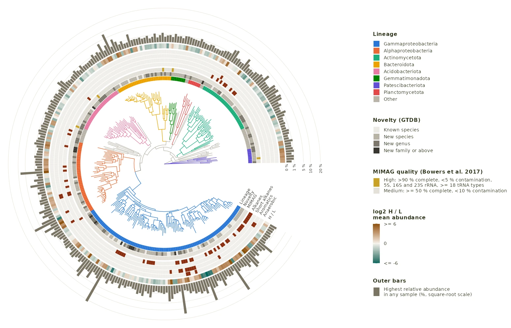
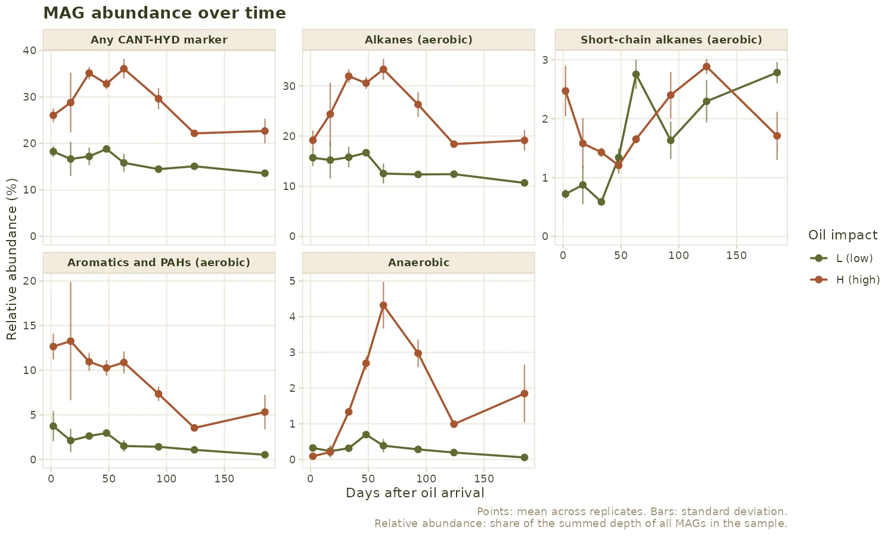

I trained as a microbiologist. My PhD (IPREM, Pau, 2021–2025) followed bacteria and archaea in hydrocarbon-contaminated coastal sediments exposed to oxic/anoxic oscillations, from microcosm experiments and DNA extraction to shotgun metagenomes. The questions were biological; answering them took bioinformatics, which became the core of my work during the PhD and since. I now build the tools I use and run them on public datasets.
R (package development, multivariate statistics, DESeq2), Python, Bash
scRNA-seq on public data (Seurat, Harmony, inferCNV)
Path
2026Independent research: mag-pipeline, magreport, hcc-singlecell; global MAG catalogue with Prof. Robert Duran
2021–2025PhD in Environmental Microbiology, IPREM UMR CNRS 5254, UPPA, Pau, France. Visiting researcher, E2ME Lab, Pontificia Universidad Católica de Chile (May–June 2023)
2017–2019MSc Environmental Engineering, Tecnológico Nacional de México
2010–2015BSc Chemical Engineering, Tecnológico Nacional de México
Spanish (native) · English (C1) · French (B2) · Based in Pau, France
02 / tools
From reads to report
Two tools that work as a chain, and one project that applies the same habits to single-cell data.
mag-pipeline
Nextflow DSL2 · SLURM
From raw paired-end reads to quality-checked, classified and annotated MAGs: MEGAHIT, CONCOCT and MetaBAT2 refined with DAS Tool, CheckM2, GUNC, galah (95 % ANI), GTDB-Tk, MIMAG rRNA/tRNA, eggNOG-mapper and hydrocarbon-degradation genes (CANT-HYD, HADEG). A second mode (--workflow contigs) skips binning: a non-redundant gene catalogue of all filtered contigs, with function, contig taxonomy (CAT) and per-sample abundance. Optionally, SingleM profiles the reads directly. Docker, Singularity and SLURM profiles, stub-run CI, run provenance.
Reads mag-pipeline outputs into tidy tables and turns them into figures (quality, taxonomy, abundance over time, hydrocarbon genes, a circular MAG tree) and an HTML report. testthat, R CMD check on CI, pkgdown site.
Hepatocellular carcinoma from public data (GSE149614; Lu et al. 2022): ~68,000 cells from 10 patients after QC. Harmony integration, per-patient inferCNV, myeloid states, pseudobulk DESeq2, LIANA, slingshot. As a check of the pipeline, tumour-associated macrophages (SPP1+, C1Q+APOE+) are almost confined to tumour sites, consistent with published HCC atlases (Lu et al. 2022; Liu et al. 2023). CytoTRACE2 did not support a stem-like tumour state under a criterion fixed in advance, so these cells are reported as progenitor-like.
A test of mag-pipeline on public data: the 48 intertidal sediment metagenomes of George et al. (2025), BioProject PRJNA1263040, a study centred on the community and hydrocarbon-gene response to the spill. Reprocessing the same reads gave a larger genome catalogue at the same completeness and contamination thresholds (both dereplicated at 95 % ANI); here, chimeric bins were also removed with GUNC. It is a reprocessing, not a new biological finding.
Design. 8 time points (2 to 185 days after the oil arrived) × 2 impact levels × 3 replicates; ~300 GB of compressed reads.
01
48
samples, ~300 GB compressed
fastp
02
8
co-assemblies
MEGAHIT
03
384
read mappings (every sample to every co-assembly)
Bowtie2 · samtools
04
1,161
refined bins
CONCOCT · MetaBAT2 · DAS Tool
05
820
genomes pass quality and chimera checks
CheckM2 · GUNC
06
281
species clusters at 95 % ANI
galah
07
281
representatives classified; functional and hydrocarbon genes annotated
GTDB-Tk · eggNOG · CANT-HYD · HADEG
refined bins
1,161
removed
−341
157 chimeric (GUNC), 184 low quality
kept
820
dereplicated
281 species clusters (820 genomes, 95 % ANI)
Dereplication groups genomes; it does not discard them. Each cluster keeps one representative for the catalogue.
6.5×281 species-level MAGs (≥ 50 % complete, < 10 % contamination) vs 43 in the original study, at the same thresholds
87 %244 without a species representative in GTDB r232; 75 without a genus
6 / 275MIMAG high / medium quality; 280 bacteria, 1 archaeon
62MAGs with hydrocarbon-degradation markers (CANT-HYD)
Constraints. A shared SLURM cluster with a 1 TB storage quota and a 5-day job limit: BAM files are not kept, assembler concurrency is capped, and GTDB-Tk and eggNOG-mapper run on a large-memory partition.

Figure 1. The 280 bacterial MAGs on a de novo tree (FastTree) built from the 120 GTDB-Tk bacterial marker genes and rooted on the Patescibacteriota, with rings for lineage, novelty against GTDB r232, MIMAG quality, four groups of hydrocarbon-degradation markers (CANT-HYD), the log2 ratio of mean abundance between high- and low-impact sites, and the highest relative abundance in any sample (square-root scale). Made with magreport (plot_mag_tree()). Explore the interactive version →

Figure 2. Abundance over time of the MAGs carrying CANT-HYD markers, grouped by degradation process as in the panels (any marker; aerobic alkanes; aerobic short-chain alkanes; aerobic aromatics and PAHs; anaerobic) at low- and high-impact sites. Abundance is each group's share of the summed depth of the 281 MAGs in a sample; mean ± SD of 3 replicates. Made with magreport (plot_abundance_timeline()).
04 / research
Thesis and manuscripts
None of the manuscripts is published yet.
PhD thesis · defended December 2025
Microbial communities influenced by oxic/anoxic oscillations in hydrocarbon-contaminated coastal sediments
Université de Pau et des Pays de l'Adour (IPREM). Supervisors: Prof. Robert Duran, Dr Cristiana Cravo-Laureau.
Main result: oxic/anoxic oscillations reorganised the bacterial communities and favoured the coexistence of aerobic and anaerobic hydrocarbon-degradation pathways, while archaeal communities remained stable.
In revisionPuriel Hernández A., Duran R., Noel C., Terrisse F., Ramond J.-B., Cagnon C., Cravo-Laureau C. Stability of archaeal communities under oxic/anoxic oscillations in oil-polluted coastal sediments. Scientific Reports.
SubmittedPuriel Hernández A., Duran R., Cravo-Laureau C. Microbial metagenomics of oil-polluted coastal sediments exposed to oxygenation fluctuation. FEMS Microbiology Ecology.
Ongoing project
2026Global MAG catalogue of hydrocarbon-contaminated coastal sediments, with Prof. Robert Duran: public studies reprocessed from raw reads with mag-pipeline, genomes to be deposited at ENA. Pilot under way; manuscript in preparation.
Software
ZenodoPuriel Hernández, A. (2026). mag-pipeline: a Nextflow workflow for genome-resolved metagenomics [Software]. Zenodo. https://doi.org/10.5281/zenodo.23920189
Poster · 2024Puriel Hernández A., Cravo-Laureau C., Duran R. Archaeal community structure influenced by oxygenation oscillations in oil-polluted coastal sediments. ISME19, Cape Town, South Africa, August 2024.
05 / outreach
Ciencia para compartir
A science-outreach site in Spanish, English and French: each topic is one short story per language, and every fact links to the study behind it.